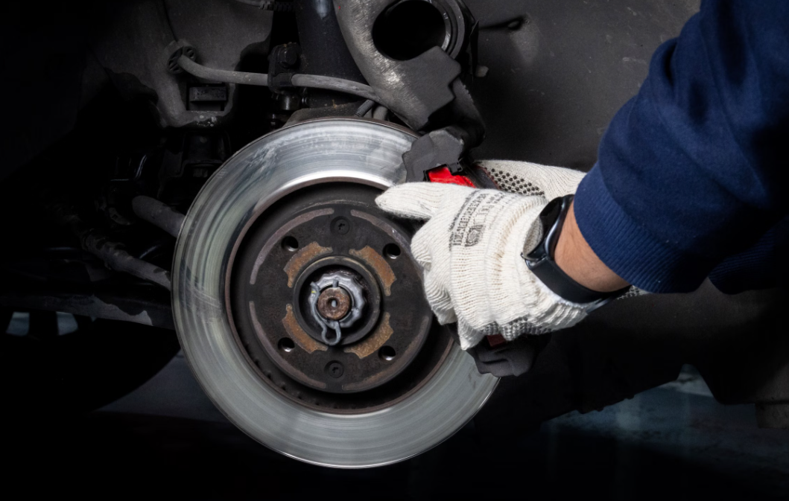
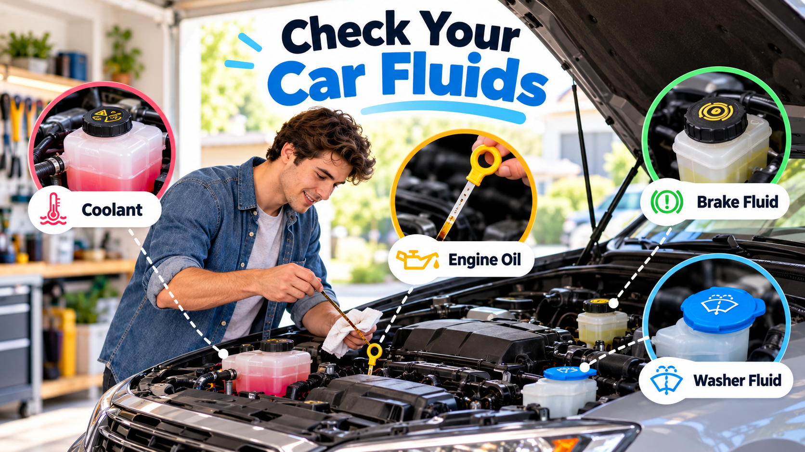
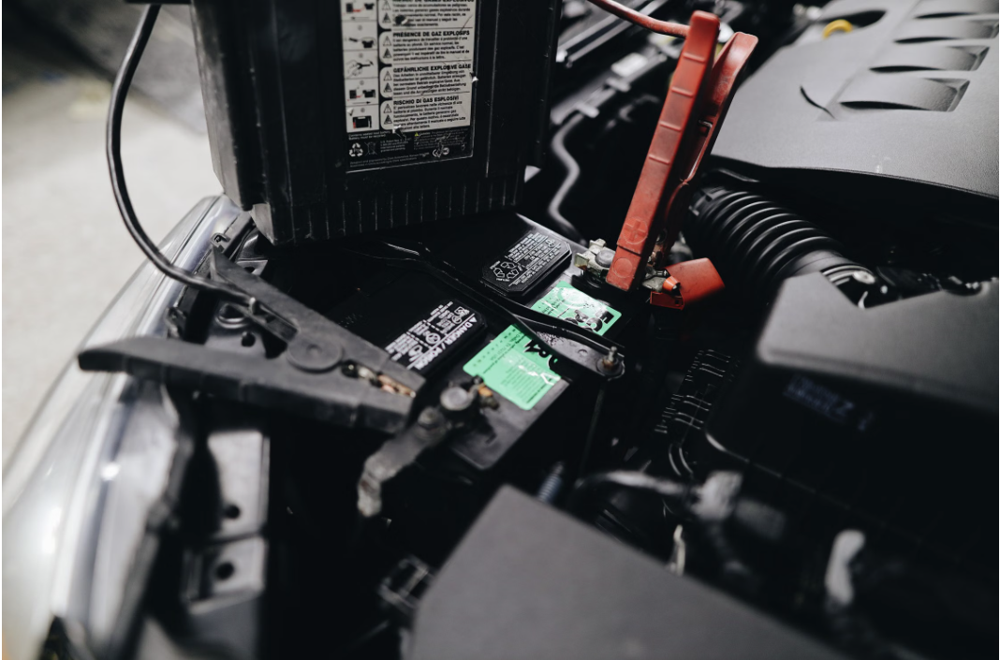
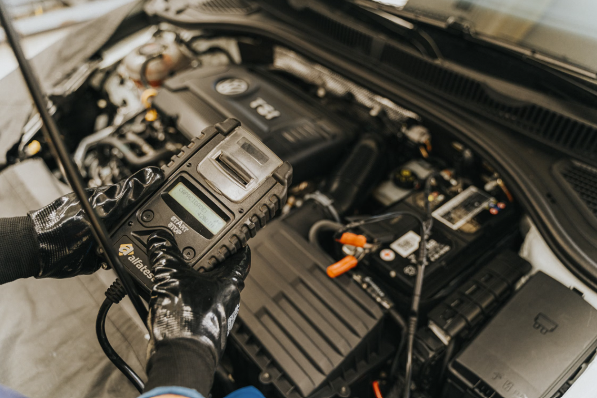

Basic Car Maintenance
Regular maintenance is one of the best ways to keep your car running properly. You do not have to repair everything yourself, but knowing what needs to be checked can help you catch problems early.

Oil Changes

Engine oil helps keep the moving parts inside your engine lubricated. Over time, the oil becomes dirty and needs to be replaced.
How often you need an oil change depends on your vehicle and the type of oil it uses. The best place to find the correct schedule is your vehicle's owner's manual.
It is also a good idea to check the oil level occasionally. If the oil level becomes too low, the engine may not have enough lubrication.
Tires

Your tires are extremely important because they are the part of the car that touches the road.
You should check your tire pressure regularly. The recommended tire pressure can usually be found on a sticker inside the driver's door.
Watch for:
- Low tire pressure
- Uneven tire wear
- Cracks or damage
- Very low tread
- Objects such as nails in the tire
If your steering wheel or car starts vibrating while driving, your tires or wheels may also need to be inspected.
Brakes

Your brakes are one of the most important safety systems on your car.
Pay attention to how the brake pedal feels and listen for unusual sounds. Squeaking, grinding, vibration, or a brake pedal that feels different from normal can be signs that your brakes need to be checked.
Do not ignore serious brake problems. If the car is having trouble stopping safely, it should be inspected as soon as possible.
Brake work is more advanced, so beginners should make sure they understand the job and have the correct tools before attempting it.
Fluids

Cars use several different fluids to operate correctly. Some common fluids include:
- Engine oil
- Coolant
- Brake fluid
- Transmission fluid
- Windshield washer fluid
If you notice liquid leaking underneath your vehicle, pay attention to the color and location of the leak. Some leaks can be minor, while others may need immediate attention.
Battery


The battery provides the electrical power needed to start your car. A weak or failing battery can cause slow starting or make the car unable to start at all.
Signs of a possible battery problem include:
- Slow engine cranking
- Clicking when trying to start
- Dim lights
- Electrical problems
- The car not starting
Battery terminals should also be kept clean and free from heavy corrosion.
Follow a Maintenance Schedule
Every vehicle is different, so it is important to check the owner's manual for the recommended maintenance schedule.
Keeping up with basic maintenance may seem like extra work, but it can help your vehicle stay reliable and can prevent more expensive repairs later.